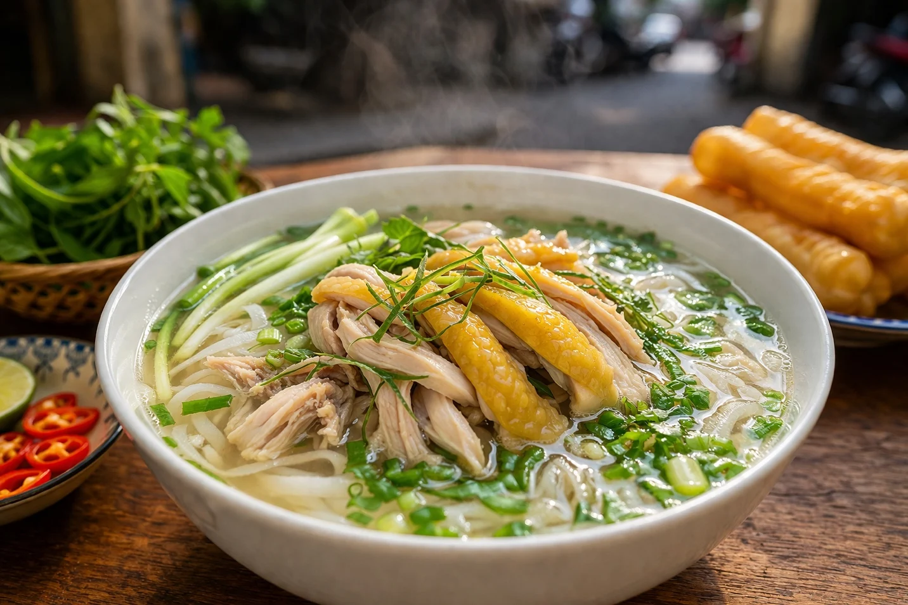
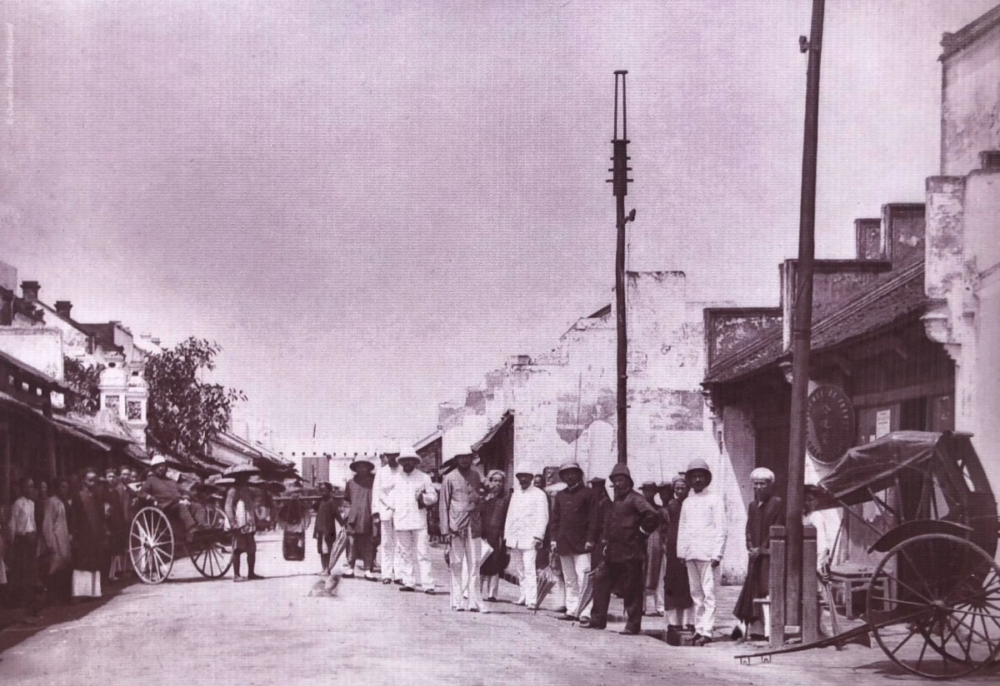

The broth
A warm, fragrant foundation that brings the bowl together.
A Hanoi tradition, served all day
Comforting bowls, gathered ingredients, and the quiet pleasure of sharing a table.

Phở ViệtA bowl with a story
Pho is one of Vietnam's best-known dishes and is especially associated with the food culture of Hanoi and Northern Vietnam. At Phở Việt, we make room for the small rituals around the bowl: a pause, a conversation, and a table shared.
From Hanoi, with history
The story of pho has evolved over generations. Its many regional expressions, ingredients, and ways of serving reflect a living food tradition rather than one fixed recipe.

The art behind the bowl
A warm, fragrant foundation that brings the bowl together.
Soft rice noodles create the familiar, satisfying texture of pho.
Fresh herbs add brightness, aroma, and a personal finishing touch.
Each table can find its own balance, one spoonful at a time.
A little Hanoi at your table
From an early morning bowl to an unhurried lunch, we bring together the warmth, ease, and generous spirit that make Vietnamese dining memorable.

The Phở Việt table
Your table is waiting